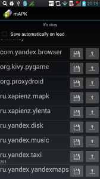

Однажды мне уже было скучно и хотелось чем-то заняться. Тогда появился проект Ленточка.
Теперь же захотелось иметь несколько версий одного приложения на устройстве и переключаться между ними. Разработчики поймут.
Представляю вниманию читателей mAPK (multi-APK).
Приложение представляет собой простой список установленных приложений (за исключением помеченных как системные). Напротив каждого приложения две кнопки: “сохранить” и “загрузить”.
Кнопка “сохранить” делает бэкап текущего состояния (на данный момент только каталог с данными из /data и apk-файл) приложения с введённым пользователем идентификатором. Кнопка “загрузить” предлагает список из ранее сохранённых состояний, после выбора пункта которого выбранное приложение удаляется и восстанавливается выбранное состояние.
На всякий случай (для забывчивых) есть галочка “Сохранять автоматически”, которая меняет поведение кнопки “загрузить” следующим образом: сначала сохраняется состояние приложения под последним выбранным идентификатором (его можно увидеть под packagename-ом приложения), а уже потом производится восстановление выбранного состояния.
Требования: нужен root и установленный busybox.
Никаких проверок на это (да и на другие ошибки) в приложении пока нет, поэтому возможны неожиданные результаты (а может что-то и поломаться).
Скриншот:

{kind=link}
Замечания и пожелания приветствуются.
Ссылка: https://play.google.com/store/apps/details?id=ru.xapienz.mapk
P.S. Если непонятно, нужно ли это Вам, то значит, что не нужно.